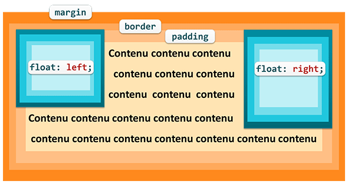
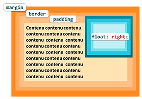

Les boîtes flottantes sont très souvent
utilisées car elles permettent de réaliser par exemple :
des habillages : des éléments sont placés tout à gauche ou
tout à droite et le reste du contenu les entoure,
des dispositions automatiques d'éléments côte à côte,
des mises en page avec des colonnes.
Principes
float: right;
float: left;
Une boîte flottante est une boîte qui est déplacée le plus à
droite ou le plus à gauche de son conteneur. Le reste du contenu
s'écoule autour de la boîte.

boîtes flottantes
Pour faire flotter une boîte, il faut utiliser la propriété float
et lui assigner comme valeur left ou right.
La boîte est d'abord placée normallement dans le flux. Elle est
ensuite rétirée du flux et poussée le plus à gauche possible de son
conteneur (float: left;
) ou le plus à droite possible de son conteneur (float:
right;
).
Le conteneu du conteneur se place autour d'elle, et éventuellement
les éléments qui suivent si la hauteur de la boîte est plus grande
que celle de son conteneur.
Une boîte flottante doit avoir une largeur
explicite spécifiée par la propriété width
sinon elle prendra la largeur nécessaire pour afficher son contenu
et donc éventuellement toute la largeur de son conteneur.
Par défaut, une boîte flottante ne dépasse jamais les limites
hautes, droites et gauches de son conteneur. Elle peut dépasser la
limite inférieure.
Une boîte flottante est toujours considérée comme une boîte de
type bloc même si son contenu est de type en ligne.
Les marges verticales d'une boîte flottante ne sont jamais
combinées avec celles les boîtes supérieure ou inférieure comme dans
le flux normal.
L'exemple suivant montre une image flottante
à gauche avec le texte du paragraphe qui l'entoure.
Le titre est positionné en flottement à
droite.
Eviter l'entourage

flottement sans entourage
Parfois on veut qu'une boîte flotte à droite ou à gauche, mais on ne
veut pas que le contenu qui suit cette boîte l'entoure complétement.
Il y a 2 solutions pour arriver à ce résultat :
La 1ere solution consiste donc à mettre une marge interne (padding)
légérement supérieure à la largeur de la boîte flottante, soit à
droite (padding-right,
soit à gauche padding-left
suivant le côté où flotte la boîte.
La 2ème solution consiste à utiliser la propriété overflow
avec une valeur autre que visible, par exemple auto.
Une des caractéristiques de la propriété overflow
avec une valeur autre que visible est de créer un
nouveau contexte de formatage de bloc dont l'un des
résultats est celui que nouv pouvons voir dans l'exemple.
Eviter les chevauchements
Comme une boîte flottante sort du flux normal, sa hauteur
n'est pas comptée dans le calcul de la hauteur du conteneur. Une
boîte flottante peut donc déborder en hauteur et s'étendre sur
plusieurs boîtes comme dans l'exemple suivant qui fait flotter à
gauche le 2ème paragraphe.
Pour éviter que la boîte flottante ne s'étende en hauteur sur
d'autres boîtes, on utiliser la clear
dans la boîte où l'on veut marquer la fin du chevauchement.
left arrête le chevauchement d'une boîte
flottante sur la gauche,
right arrête le chevauchement d'une boîte
flottante sur la droite,
both arrête le chevauchement des 2 côtés.
Boîtes flottantes adjacentes
Lorsque des boîtes flottantes sont adjacentes (côte à côte)
leur bord supérieur est positionné sur la même ligne si il y a assez
de place. Si il n'y a pas assez de place, la ou les dernières boîtes
flottantes sont déplacées plus bas dans la première position où il y
a assez de place.
Dans l'exemple suivant, les boîtes figure
sont toutes avec un flottement à gauche. Suivant la largeur de la
fenêtre d'affichage, les boîtes seront disposées pour respecter la
règle. Vous pouvez redimensionner la fenêtre pour voir les
changements dynamiques de position.
Mise en page avec colonnes
Les boîtes flottantes adjacentes peuvent être utilisées pour
faire des mises en page avec des colonnes (2, 3, 4, etc).
L'exemple suivant présente une mise en page
classique avec 3 colonnes.